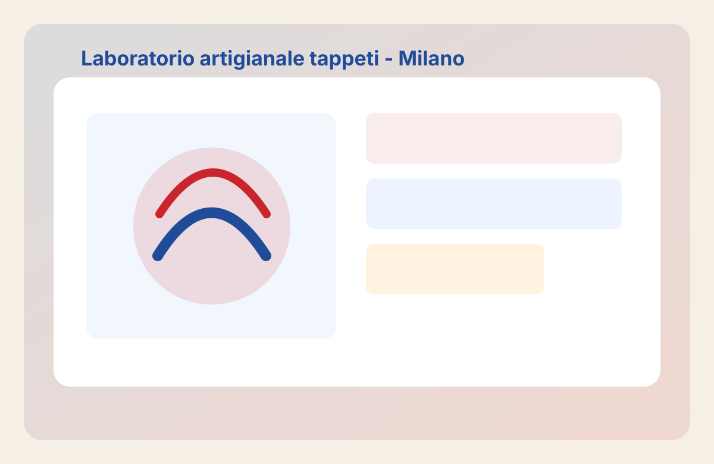

Adatto a ogni fibra
Valutiamo lana, seta, cotone e fibre miste prima di intervenire.
Servizio professionale locale
Pulizia tappeti Milano dal 1992: lavaggio a mano, pre-trattamento, risciacquo controllato e asciugatura professionale per tappeti moderni, antichi e persiani.

Valutiamo lana, seta, cotone e fibre miste prima di intervenire.
Rimozione polvere, odori e residui con procedure non aggressive.
Lavaggio calibrato per preservare cromie e disegni originali.
Verifica finale per consegnare un tappeto pulito e stabile.
Analisi tecnica del tappeto e del tipo di sporco.
Rimozione polvere e macchie superficiali.
Metodo artigianale ad acqua con attenzione ai materiali.
Asciugatura controllata e pettinatura finale.
Ritiro in sede o consegna concordata.
Tappeti persiani, orientali, antichi, moderni, kilim, tappeti in lana, seta e cotone. Offriamo anche servizi correlati: restauro tappeti Milano, smacchiatura e tintura, anti-tarme, deodorazione e disinfezione.
Il prezzo dipende da misura, materiale, stato e trattamento richiesto.
Sì, con metodo specifico e lavaggio a mano.
Generalmente da pochi giorni a una settimana.
Sì, al numero 3291777893.